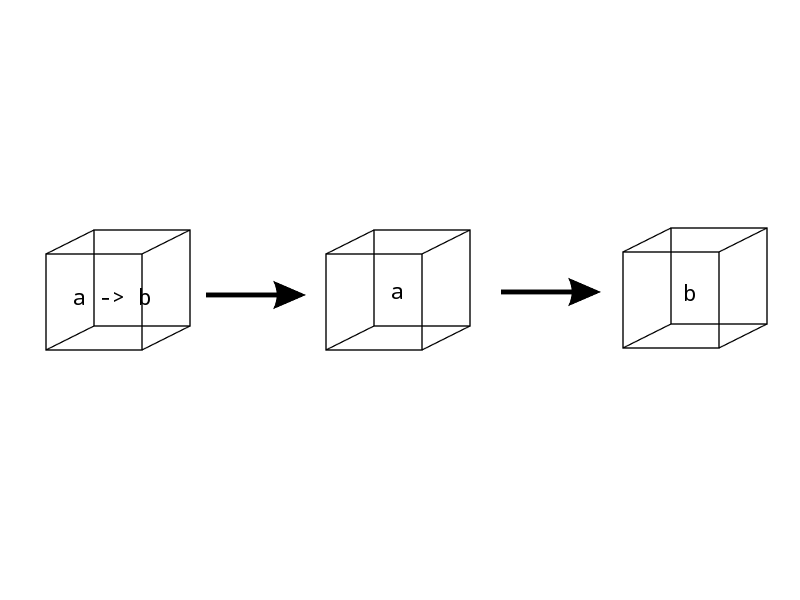
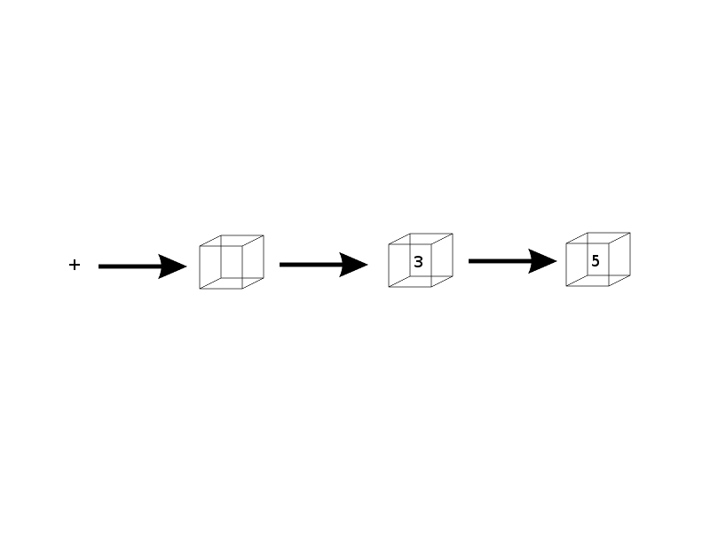

isOdd :: Int -> Bool
isOdd x = (x `mod` 2) /= 0Distill some of the more difficult terms in functional programming, show it in Haskell and on as many possible languages of the JVM
Int - Bounded IntegerInteger - Unbounded IntegerFloat - Floating PointDouble - Double PrecisionBool - BooleanChar - Character (String are list of chars)Tuples - Types surrounded by parenthesisisOdd :: Int -> Bool
isOdd x = (x `mod` 2) /= 0mod with the backticks?First off, here is the signature.
What the hell is a?
mod :: Integral a => a -> a -> aTake 2, and Returns 1
(mod 5 2)This would work and return 1
Since it is a Take 2 and Return 1…
5 `mod` 2Specifying the types before the method
sumThree :: Int -> Int -> Int -> Int
|---- Take 3-----|sumThreesumThree :: Int -> Int -> Int -> Int
sumThree x y z = x + y + zTo actually run sumThree
sumThree 1 2 3Note: x, y, z is pattern matched
Another way to look at sumThree is through currying…
sumThree :: Int -> Int -> Int -> Int
sumThree x y z = x + y + zI can partially apply sumThree
let f = sumThree 2 1f(4) -- 7myHead :: [a] -> a
myHead [] = error "empty list"
myHead [x] = x
myHead (x:xs) = xThis is analogous to in Java:
public A <A> myHead(List<A> list) {...}filter (\x -> x `mod` 2 /= 0) [1,2,3,4]Becomes:
[1,3]Remember this?
isOdd :: Int -> Bool
isOdd x = (x `mod` 2) /= 0We can apply it to as a function, since it is a function!
filter f [1,2,3,4]Evaluates to…
[1,3]map (\x -> x * 3) [1,2,3,4]Becomes:
[3,6,9,12]map (3*) [1,2,3,4]Becomes:
[3,6,9,12]map :: [a] -> (a -> b) -> [b]This is a higher order function!
Note: b can represent another type
map again…map (3*) [1,2,3,4]Since b can be another type, therefore we can do…
map (\i -> "Hello " ++ show i) [1,2,3,4]Evaluates to…
["Hello 1", "Hello 2", "Hello 3", "Hello 4"]FYI: Show converts anything to String when it can.
myZipWith :: (a -> b -> c) -> [a] -> [b] -> [c]
myZipWith _ [] _ = []
myZipWith _ _ [] = []
myZipWith f (x:xs) (y:ys) = f x y : myZipWith f xs ysSimple Case:
myZipWith (+) [1,2,3] [4,5,6]Evaluates To:
[5, 7, 9]Higher Difficulty Case:
let a = [1,2,3,4,5,6]
let b = ["Rock", "Jazz", "Country", "Salsa", "Polka", "Hip Hop"]
putStrLn (show $ myZipWith (\i s -> s ++ " " ++ show i) a b)Not really a higher order function but close a function into a method…
static <A,B,C> Stream<C> zip(Stream<? extends A> a,
Stream<? extends B> b,
BiFunction<? super A,? super B,? extends C> zipper)How do we use it?
let a = Arrays.asList(1,2,3,4,5,6);
let b = Arrays.asList("Rock", "Jazz", "Country",
"Salsa", "Polka", "Hip Hop");
Streams.zip(a.stream(),
b.stream(),
(x, y) -> y + " " + x).
collect(Collectors.toList())Note: Using it wasn’t bad, but if you had to create your own zip, rough
val a = List(1,2,3,4,5,6)
val b = List("Rock", "Jazz", "Country", "Salsa", "Polka", "Hip Hop")
a.zip(b).map{case (i,s) => s + " " + i}def a = [1,2,3,4,5,6]
def b = ["Rock","Jazz","Country","Salsa","Polka","Hip Hop"]
[a,b].transpose().collect{x -> x[1] + " " + x[0]}(def a [1 2 3 4 5 6])
(def b ["Rock" "Jazz" "Country" "Salsa" "Polka" "Hip Hop"])
(map #(str %2 " " %1) a b)interface Eq <A> {
public boolean equals (A a, A b);
default public boolean notEquals (A a, A b) {
return !equals(a,b)
}
}Eq and say for type Cowpackage com.example.cowtypeclasses
public class CowEquivalenceByName implements Eq<Cow> {
public boolean equals (Cow a, Cow b) {
a.getName().equals(b.getName());
}
}In other words…
import this CowEquivalence when ever we need to strategically use it.If we have the ability to create both classes in the same package (Java doesn’t do this I know)
package com.example.cowtypeclasses
public class CowEquivalenceByName {...}
public class CowEquivalenceByWeight {...}In some random method in some other package…I can do
public void foo(Cow a, Cow b) {
import com.example.cowtypeclasses.CowEquivalenceByWeight
a.equals(b); //true if equal weight!
}That’s a type class!
First off:
What Haskell has are "Algebraic Data Types"!
data GameResult = Win | Loss | TieEq type class look like?This is already built into Haskell
class Eq a where
(==) :: a -> a -> Bool
(/=) :: a -> a -> Bool
x == y = not (x /= y)
x /= y = not (x == y)Warning: class is not a Java class. It is a type class!
instance of the type class:instance Eq GameResult where
Win == Win = True
Loss == Loss = True
Tie == Tie = True
_ == _ = FalseWarning: By instance we don’t mean an object we mean "an implementation" of the type class
(Win == Win) -- True
(Loss == Win) -- Falsetrait Eq[a] {
def eq(a1: a)(a2: a): Boolean
}sealed abstract class GameResult
final case object Win extends GameResult
final case object Loss extends GameResult
final case object Tie extends GameResultimplicit class GameResult extends Eq[GameResult] {
def eq(a1:GameResult, a2:GameResult) = (a1, a2) match {
case (Win, Win) => true
case (Loss, Loss) => true
case (Tie, Tie) => true
case _ => false
}
}def newIsEquals(x:GameResult, y:GameResult)(implicit val eq:Eq[GameResult]) = {
eq(x)(y)
}(defprotocol Eq
(equal-to [x y])
(not-equal-to [x y])
)
(extend-type clojure.lang.Keyword
Eq
(equal-to [x y] (= x y))
(not-equal-to [x y] (not= x y))
)
(println (equal-to :Win :Win))
(println (equal-to :Loss :Loss))
(println (equal-to :Tie :Tie))
(println (equal-to :Win :Loss))Eq type class for various types!(1 == 4)This works because there is an instance of Eq Int
("Hello" == "Hello")This works because there is an instance of Eq String
(Win == Win)This works because we said so and is an instance of Eq GateResult
class (Eq a) => Ord a where
(<), (<=), (>=), (>) :: a -> a -> Bool
max, min :: a -> a -> aPrelude> :t 4
4 :: Num a => aPrelude> :t "What is love? Baby don't hurt me"
"What is love? Baby don't hurt me" :: [Char]Kinds are a description of the type
Prelude> :k Int
Int :: *"In order to create a type Int, how many extra things do we need?"
Maybe TypeAlgebraic Data Type of Maybe
data Maybe a = Nothing | Just aPrelude> Just 3
Just 3
Prelude> Just "Blueberry Pancakes"
Just "Blueberry Pancakes"
Prelude> Nothing
Nothing
Prelude> Just 10 :: Maybe Double
Just 10.0MaybePrelude> :t Just "Blueberry Pancakes"
Just "Blueberry Pancakes" :: Maybe [Char]Prelude> :t Just 90
Just 90 :: Num a => Maybe aMaybeFirst off, remember this signature…
data Maybe a = Nothing | Just aPrelude> :k Maybe
Maybe :: * -> *Prelude> :k Maybe Int
Maybe Int :: *Either typedata Either a b = Left a | Right bPrelude> Left 10
Left 10
Prelude> :t Left 10
Left 10 :: Num a => Either a bWhat do you think the unsatisfied kind is of Either?
EitherPrelude> :k Either
Either :: * -> * -> *Prelude> :k Either Int
Either Int :: * -> *:k Either Int [Char]
Either Int [Char] :: *Prelude> :t []
[] :: [a]Prelude> :t [1,2,3,4]
[1,2,3,4] :: Num t => [t]What is the kind of []?
[]Prelude> :k []
[] :: * -> *Prelude> :k [Int]
[Int] :: *Functor Type ClassThis is where things get "kind" of hard
class Functor f where
fmap :: (a -> b) -> f a -> f bf has a requirement, what kind does f have to be?
Functorclass Functor f where
fmap :: (a -> b) -> f a -> f bf a means whatever f is it requires an a
f b also means whatever f is, it requires a b
Because f requires one thing *, therefore we know that f is * -> *
Quick! It’s up to us now to find a kind of * -> *!
kind of MaybeReminder #1:
data Maybe a = Nothing | Just aReminder #2:
class Functor f where
fmap :: (a -> b) -> f a -> f bReminder #3:
Prelude> :k Maybe
Maybe :: * -> *Well that’s what we need a kind of * → *!
instance Functor Maybe where
fmap f (Just x) = Just (f x)
fmap f Nothing = NothingMaybe Functorfmap (\x -> x * 14) (Just 19)Results in:
Just 266I could’ve written it like this…
fmap (14*) (Just 19)Now, trying with Nothing
fmap (22+) NothingResults in:
NothingReminder of the kind of []
Prelude> :k []
[] :: * -> *It works! Therefore to make it a Functor:
instance Functor [] where
fmap f xs = map f xsor
instance Functor[] where
fmap = mapTherefore fmap and map should work the same
Prelude> fmap (12*) [1,2,3,4,5]
[12,24,36,48,60]
Prelude> map (12*) [1,2,3,4,5]
[12,24,36,48,60]Reminder of the Algebraic Data Type
data Either a b = Left a | Right bThe problem with Either is that it’s kind is..
Prelude> :k Either
Either :: * -> * -> *and it is not * -> * like we need it to be, therefore we need satisfy one half of the kind pattern.
instance Functor (Either a) where
fmap f (Right x) = Right (f x)
fmap f (Left x) = Left xReminder:
class Functor f where
fmap :: (a -> b) -> f a -> f bEither FunctorPrelude> fmap ("Nice " ++) (Right "Code")
Right "Nice Code"
Prelude> fmap (20*) (Left 30)
Left 30public F<B> <A, B, F extends Functor> fmap(x:A, f:F<A>) {
....
}But we can’t. We cannot do F<B> because F is unknown, and java needs that. F is what is known as a Higher Kinded Type
trait Functor[F[_]] { self =>
def map[A, B](fa: F[A])(f: A => B): F[B]
}
implicit object ListFunctor extends Functor[List] {
override def map[A, B](fa: List[A])(f: (A) => B): List[B] = fa.map(f)
}
implicit object OptionFunctor extends Functor[Option] {
override def map[A, B](fa: Option[A])(f: (A) => B): List[B] = fa match {
case Some(x) => Some(f(x))
case None => None
}
}
/* Power play! I only need to declare once! Remember ad-hoc polymorphism! */
def fmap[A, B, C[_]](f:A => B)(coll:C[A])(implicit functor:Functor[C]) =
functor.map(coll)(f)
fmap(x => x + 2)(List(1,2,3,4)) //List(3,4,5,6)
fmap(x => x + 2)(Some(100)) //Some(102)
fmap(x => x + 19)(None) //Nonefmap (+) (Just 10)Turns into:
(Just ((+) 10))Which is the same as:
(Just (10+))Where the type is:
:t Maybe(Int -> Int)fmap (+) [1,2,3,4,5]Where the type is…
:t [Integer -> Integer]or
fmap (\x y z -> x + y + z) [1,2,3,4,5]Where the type is…
:t [Integer -> Integer -> Integer]What if we wanted to do…
op Just(4*) Just(5)so we can get Just(9)?
class (Functor f) => Applicative f where
pure :: a -> f a
(<*>) :: f (a -> b) -> f a -> f bNote: Applicatives are Functors
pure babypure babypure 5 :: Maybe Intpure 3 :: Either String IntWill return:
Right 3<*> and fmapfmap :: (a -> b) -> f a -> f a<*> :: f (a -> b) -> f a -> f b<*> looks like
<*> looks like<*> Just(*3) Just 4<*> looks likeJust(*3) <*> Just 4
pure (+) <*> Just 3 <*> Just 5pure (*) <*> Nothing <*> Just 9instance Applicative [] where
pure x = [x]
fs <*> xs = [f x | f <- fs, x <- xs]pure 3 :: [Int]Converts to:
[3]pure "Dance" : [String]Converts to:
["Dance"]Note: String is an alias for [Char]
<*>?The signature is
fs <*> xs = [f x | f <- fs, x <- xs]`This is called a for comprehesion
[(1*), (2+)] <*> [3, 9][3, 9, 5, 11][(+), (*)] <*> [4,5] <*> [1,9]Taking it in parts
[(+4), (+5), (*4), (*5)] <*> [1,9]
[5, 13, 6, 14, 4, 36, 5, 45]trait Applicative[F[_]] {
def pure[A](a:A):F[A]
def apply[A, B](fa: F[A])(f:F[A=>B]):F[B]
}
implicit object ListApplicative extends Applicative[List] {
override def pure[A] (a:A) = List(a)
override def apply[A, B](xs: List[A])(fs: List[A => B]): List[B] =
for (f <- fs;
x <- xs) yield f(x)
}
implicit object OptionApplicative extends Applicative[Option] {
override def pure[A] (a:A) = Some(a)
override def apply[A, B](fa: Option[A])(f: Option[A => B]): Option[B] = (f, fa) match {
case (None, _) => None
case (_, None) => None
case (Some(f), Some(i)) => Some(f(i))
}
}
def applicate [A, B, C[_]](f:C[A => B])(coll: C[A])(implicit applicative:Applicative[C]) = {
applicative.apply(coll)(f)
}
println(applicate(Some((x:Int) => x * 4):Option[Int => Int])(Some(5):Option[Int]))
println(applicate(List((x => x + 1), (x => x + 4)):List[Int => Int])(List(3, 9)))Some(20)
List(4,10,7,13)
`3 * 4``2 + 10`((r + s) + t) or (r + (s + t))class Monoid m where
mempty :: m
mappend :: m -> m -> m
mconcat :: [m] -> m
mconcat = foldr mappend memptymempty `mappend` x = x
x `mappend` mempty = x
(x `mappend` y) `mappend` z = x `mappend` (y `mappend` z)instance Monoid [a] where
mempty = []
mappend = (++)Prelude> [1,2,3] `mappend` [4,5,6]
[1,2,3,4,5,6]
Prelude> "What's" `mappend` "cool"
What'scool
Prelude> mempty::[String]
[]
Prelude> mempty::[Int]
[]
Prelude> mempty::String
""
Prelude> mconcat [[1,2], [3,5,6,7,10], [12, 19]]
[1,2,3,5,6,7,10,12,19]foldr?Prelude> let g = foldr (+) 0
Prelude> g [1,2,3,4,5]
15Repeating from the previous slide
Prelude> mconcat [[1,2], [3,5,6,7,10], [12, 19]]
[1,2,3,5,6,7,10,12,19]trait Monoid[A] {
def op(a1: A, a2: A): A
def zero: A
}
val stringMonoid= new Monoid[String] {
def op(a1: String, a2: String) = a1 + a2
val zero = ""
}
def listMonoid[A] = new Monoid[List[A]] {
def op(a1: List[A], a2: List[A]) = a1 ++ a2
val zero = Nil
}fmap :: (Functor f) => (a -> b) -> f a -> f b(<*>) :: (Applicative f) => f (a -> b) -> f a -> f bfmap :: (Functor f) => (a -> b) -> f a -> f b(<*>) :: (Applicative f) => f (a -> b) -> f a -> f b(>>=) :: (Monad m) => m a -> (a -> m b) -> m b(>>=) :: (Monad m) => m a -> (a -> m b) -> m bclass Monad m where
return :: a -> m a
(>>=) :: m a -> (a -> m b) -> m b
(>>) :: m a -> m b -> m b
x >> y = x >>= \_ -> y
fail :: String -> m a
fail msg = error msgreturn?pure in Applicative, take an item and put into a context or containerreturn 4 :: Maybe IntEvaluates To…
Just 4return 4 :: [Int]Evaluates To..
[4](>>=) :: m a -> (a -> m b) -> m bHow we will invoke as such:
ma >>= (a -> m b)Bind will take one monad, and a function that will return a monad of another type, and provide some result
failreturn will provide a Monad of it’s simplest formfail will return a monad representing failure(>>) will take two monads, and determine with one to pass on down.The signature is:
(>>) :: m a -> m b -> m b
x >> y = x >>= \_ -> yinstance Monad Maybe where
return x = Just x
Nothing >>= f = Nothing
Just x >>= f = f x
fail _ = NothingPrelude> Just 4 >>= \x -> return (3*x)
Just(12)
Prelude> Nothing >>= \x -> return(x + 100)
Nothing
Prelude> fail "Help" :: Maybe Int
NothingPrelude> Just 10 >>= (\x -> Just (show x ++ "!"))
Just "10!"Prelude> Just 10 >>= (\x -> Just "!" >>= (\y -> Just (show x ++ y)))
Just "10!"Both of the above, are longer than…
Prelude> let x = 3; y = "!" in show x ++ yPrelude> Nothing >>= (\x -> Just "!" >>= (\y -> Just (show x ++ y)))
Nothing
Prelude> Just 3 >>= (\x -> Nothing >>= (\y -> Just (show x ++ y)))
Nothing
Prelude> Just 3 >>= (\x -> Just "!" >>= (\y -> Nothing))
NothingWe are able to convert this…
monadStack :: Maybe String
monadStack = Just 3 >>= (\x ->
Just "!" >>= (\y ->
Just (show x ++ y)))to this…
monadStackWithDo :: Maybe String
monadStackWithDo = do
x <- Just 3
y <- Just "!"
Just (show x ++ y)This is called "Monad Comprehension"
firstChar :: Maybe Char
firstChar = do
(x:xs) <- Just "hello"
return xHere is the definition of a list monad..
instance Monad [] where
return x = [x]
xs >>= f = concat (map f xs)
fail _ = []And here is how we use it…
[3,4,5] >>= \x -> [x,-x]
[3,-3,4,-4,5,-5]Should be very similar to the Maybe Monad
Prelude> [] >>= \x -> [1,2,3]
[]
Prelude> [1,2,3] >>= \x -> []
[]Prelude> [10,11,12] >>= (\x -> [x + 1, x + 2, x + 3])
[11,12,13,12,13,14,13,14,15]Here is Flat Map in Java 8!
Arrays.asList(10, 11, 12).stream().flatMap(x -> Arrays.asList(x + 1, x + 2, x + 3).stream()).collect(Collectors.toList());[11, 12, 13, 12, 13, 14, 13, 14, 15]List(10, 11, 12).flatMap(x => List(x + 1, x + 2, x + 3))[11, 12, 13, 12, 13, 14, 13, 14, 15]Like a Maybe Monad
Some(4).flatMap(x => Some(3 + x))Some(7)main = do
x <- return("Hello ")
y <- return("World")
putStrLn (x ++ y)is the same as
main = do
return("Hello ") >>= \x ->
return("World") >>= \y ->
putStrLn(x ++ y)Note: This is perhaps the single reason why Haskell is always so hard to get started!
val future1 = Future {
Thread.sleep(3000)
180 / 2
}
val future2 = Future {
Thread.sleep(3000)
90 / 3
}
val result = future1.flatMap {
x =>
future2.map {
y =>
x + y
}
}